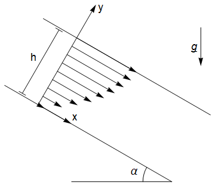

3.8. Steady Euler solutions¶
In this section:
We derive the steady flow profiles for some classic geometries
3.8.1. General technique¶
The incompressibility condition is the simplest equation to work with, and for these simple geometries it often shows one of the flow components to be zero, so always look at the incompressibility condition first.
Then we write out the components in the conservation of momentum equations. The examples given here are all ones that can be solved by hand. Some other classic flow profiles that we do not study here can be found by series solution.
To find the particular solutions we must impose boundary conditions. The most important boundary condition to be aware of here is the “no-slip” condition, which means that at a solid boundary fluid particles have no velocity component parallel to the boundary. Literally they do not slip along the boundary. This condition is now known to be correct, but was historically contentious and will be discussed in more detail in a later section.
Other boundary conditions employed in this section include a condition that no fluid can flow through a solid boundary, and that at a free surface there is no shear stress.
3.8.2. Couette flow (flow driven by a moving boundary)¶
In this example, we consider the motion of fluid between two horizontal planes. The lower plane is held at rest and the upper plan is moved at speed \(U\) as shown. We will assume that there is no pressure gradient in the horizontal direction, so that the flow is entirely driven by viscosity. We will assume that the flow is independent of \(x\) so that \(\underline{u}=(u(y),v(y),0)\).
{kind=link}
The equations of motion are:
It follows from the incompressibility condition that \(v\) is constant, and since \(v(0)=0\) this component must be identically zero everywhere, so the conservation of momentum equations simplify to:
The velocity solution satisfying the no-slip condition \(u(0)=0\) and \(u(h)=U\) is the linear profile:
The shear stress is constant throughout the fluid. In the downstream direction
It is also possible to solve the problem for an applied pressure gradient. For example if we take a constant pressure gradient \(\frac{\partial p}{\partial x}=G\) then we obtain
3.8.3. Steady flow under gravity down an inclined plane¶
In this example, we will consider gravity driven flow down an inclined plane, with a free surface at \(y=h\), as shown. We will assume that the flow is independent of \(x\) so that \(\underline{u}=(u(y),v(y),0)\).
{kind=link}
The equations of motion are:
It follows from the incompressibility condition that \(v\) is constant, and since \(v(0)=0\) this component must be identically zero everywhere. The conservation of momentum equations then simplify to:
By integrating the latter of these two equations we obtain \(p=-\rho g y \cos(\alpha)+f(x)\) and we can find \(f(x)\) by applying an atmospheric pressure condition on the free surface:
Therefore the pressure is independent of \(x\) and the first equation in (3.71) reduces to
The solution satisfying the no-slip condition \(u(0)=0\) and free surface stress shear “no stress” condition \(u'(h)=0\) is the parabolic profile:
The velocity flux is therefore
Exercise 3.17
Incompressible fluid of uniform density \(\rho\) and viscosity \(\nu\) flows steadily under gravity \(g\) between two vertical planes at \(x = 0\) and \(x = a\). The plane at \(x = 0\) is at rest, but the plane at \(x = a\) is moving vertically upwards at speed \(V\). By assuming that the pressure is constant throughout the fluid and that the velocity field does not depend on the vertical coordinate, solve the equations of motion to find the velocity field.
3.8.4. Plane Poiseuille flow¶
In this example, we will consider flow between two parallel planes driven by a constant pressure gradient \(\frac{\partial p}{\partial x}=-P\). We will assume that the flow is independent of \(x\) so that \(\underline{u}=(u(y),v(y),0)\).

The equations of motion are:
It follows from the incompressibility condition that \(v\) is constant, and since \(v(0)=0\) this component must be identically zero everywhere. The conservation of momentum equations simplify to:
The velocity solution satisfying the no-slip conditions \(u(0)=0\) and \(u(h)=0\) is the parabolic profile:
The mass flux is given by
3.8.5. Poiseuille pipe flow¶
In this example we will consider flow along a pipe of circular cross-section \(r=a\), under constant pressure gradient \(\frac{\mathrm{d}p}{\mathrm{d}z}=-P\). An illustration of the geometry is provided below:

We will work in cylindrical polar coordinates, using the equations given in Section 3.6.5. It is clear from the flow geometry that \(v_{\theta}=0\), and that \(v_r,v_z\) are independent of \(\theta\). We also assume that \(v_r,v_z\) are independent of the downstream position \(z\).
From the incompressibility condition with \(v_r=v_r(r)\), \(v_{\theta}=0\), \(v_z=v_z(r)\), we then obtain
The solution for \(v_r\) is required to satisfy \(v_r(r=a)=0\), so that there is no flow through the boundary. This gives
However, when \(r=0\) the result is infinite unless \(K=0\), so we conclude that there is no radial component of velocity and we may take \(\underline{v}=(0,0,v_z(r)).\)
The third conservation of momentum equation then gives
The solution for \(v_z\) that satisfies the no-slip condition \(v_z(r=a)=0\) is
Again, we find that \(u_z\) is infinite on \(r=0\) unless \(A=0\), which finally gives the result:
A bloody difficult problem
Poiseuille flows are named after the physician who first studied the problem in connection with blood flow. Their instability under certain conditions constitutes one of the most important problems of fluid dynamics.